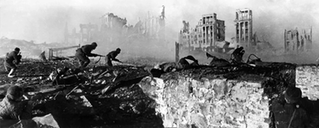
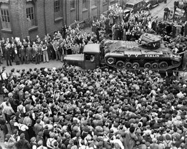

Soviet Union on the Eastern Front
Originally, Hiter had a non-aggression pact called the Molotov-Ribbentrop Pact with the Soviet Union which dictated that they would not attack one another as well as divide the contries that lied between them. Howver, Germany invaded the Soviet Union by surprise in 1941. This was the largest land invasion with over 10 million lives taking part in the conflict. The Soviet Union had a massive amount of troops but lacked the same amount of infrastructure that Germany had. As a result, the Soviet losses were massive at about 27 million through the war. Of these roughly 10 million were military personnel.
The deadliest battle in World War two was The Battle of Stalingrad. It lasted five months with German forces working to take the city. In this one battle alone the Soviet Union lost 1.2 million lives defending Stalingrad. This long and bloody battle resulted in a victory for the Soviet Union and is considered to be the major turning point on the Eastern Front as it pushed the German armies back.
The Reach of Lend-Lease
Both Britain and the United States used Lend-Lease Programs to send supplies to the Soviet Union on the Eastern Front. This totalled $11.3 billion or a staggering $180 billion in modern currency. While the USSR recieved many tanks from the British, most weren't loved by the crews. The reasons for this have more to do with the environment than the machines themselves. British armor typically had think tracks, this meant that there wasn't a lot there to deal with the extremely muddy ground that went on for months on the eastern front. Tanks that were amazing on the western front, such as the Matilda were loathed by their crews. On the flipside, the American tanks were a massive hit. This was mostly to do with their infamous reliablity. They were extremely difficult to break down, and they had to be because they were going across the Atlantic. The Lend Lease program was massive, and it was a huge boon for the Allies that they had such equipment, albeit at a price.